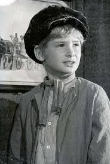

s Charles Dickens' second novel, and was first published as a serial 1837–39.[1] The story centres on orphan Oliver Twist, born in a workhouse and sold into apprenticeship with an undertaker. After escaping, Oliver travels to London, where he meets "The Artful Dodger", a member of a gang of juvenile pickpockets led by the elderly criminal, Fagin.
Oliver Twist is notable for its unromantic portrayal by Dickens of criminals and their sordid lives, as well as for exposing the cruel treatment of the many orphans in London in the mid-19th century.[2] The alternative title, The Parish Boy's Progress, alludes to Bunyan's The Pilgrim's Progress, as well as the 18th-century caricature series by William Hogarth, A Rake's Progress and A Harlot's Progress.[3] In this early example of the social novel, Dickens satirises the hypocrisies of his time, including child labour, the recruitment of children as criminals, and the presence of street children. The novel may have been inspired by the story of Robert Blincoe, an orphan whose account of working as a child labourer in a cotton mill was widely read in the 1830s. It is likely that Dickens's own youthful experiences contributed as well.[4] Oliver Twist has been the subject of numerous adaptations for various media, including a highly successful musical play, Oliver!, and the multiple Academy Award-winning 1968 motion picture. Disney also put its spin on the novel with the animated film called Oliver & Company in 1988
Oliver Twist is born in a workhouse in a provincial town. His mother has been found very sick in the street, and she gives birth to Oliver just before she dies. Oliver is raised under the care of Mrs. Mann and the beadle Mr. Bumble in the workhouse. When it falls to Oliver’s lot to ask for more food on behalf of all the starving children in the workhouse, he is trashed, and then apprenticed to an undertaker, Mr. Sowerberry. Another apprentice of Mr. Sowerberry’s, Noah
Claypole insults Oliver’s dead mother and the small and frail Oliver attacks him. However, Oliver is punished severely, and he runs away to London. Here he is picked up by Jack Dawkins or the Artful Dodger as he is called. The Artful Dodger is a member of the Jew Fagin’s gang of boys. Fagin has trained the boys to become pickpockets. The Artful Dodger takes Oliver to Fagin’s den in the London slums, and Oliver, who innocently does not understand that he is among criminals, becomes one of Fagin’s boys. When Oliver is sent out with The Artful Dodger and another boy on a pickpocket expedition Oliver is so shocked when he realizes what is going on that he and not the two other boys are caught. Fortunately, the victim of the thieves, the old benevolent gentleman, Mr. Brownlow rescues Oliver from arrest and brings him to his house, where the housekeeper, Mrs. Bedwin nurses him back to life after he had fallen sick, and for the first time in his life he is happy.
However, with the help of the brutal murderer Bill Sikes and the prostitute Nancy Fagin kidnaps Oliver. Fagin is prompted to do this by the mysterious Mr. Monks. Oliver is taken along on a burglary expedition in the country. The thieves are discovered in the house of Mrs. Maylie and her adopted niece, Rose, and Oliver is shot and wounded. Sikes escapes. Rose and Mrs. Maylie nurse the wounded Oliver. When he tells them his story they believe him, and he settles with them. While living with Rose and Mrs. Maylie Oliver one day sees Fagin and Monks looking at him in through a window. Nancy discovers t hat Monks is plotting against Oliver for some reason, bribing Fagin to corrupt his innocence. Nancy also learns that there is some kind of connection b etween Rose and Oliver; but after having told Rose’s adviser and friend Dr. Losberne about it on the steps of London Bridge, she is discovered by Noah Claypole, who in the meantime has become a member of Fagin’s gang, and Sykes murders her. On his frantic flight away from the crime Sykes accidentally and dramatically hangs himself. Fagin and the rest of the gang are arrested. Fagin is executed after Oliver has visited him in the condemned cell in Newgate Prison. The Artful Dodger is transported after a court scene in which he eloquently defends himself and his class. Monks’ plot against Oliver is disclosed by Mr. Brownlow. Monks is Oliver’s half-brother seeking all of the inheritance for himself. Oliver’s father’s will states that he will leave money to Oliver on the condition that his reputation is clean. Oliver’s dead mother and Rose were sisters. Monks receives his share of the inheritance and goes away to America. He dies in prison there, andOliver is adopted by Mr. Brownlow